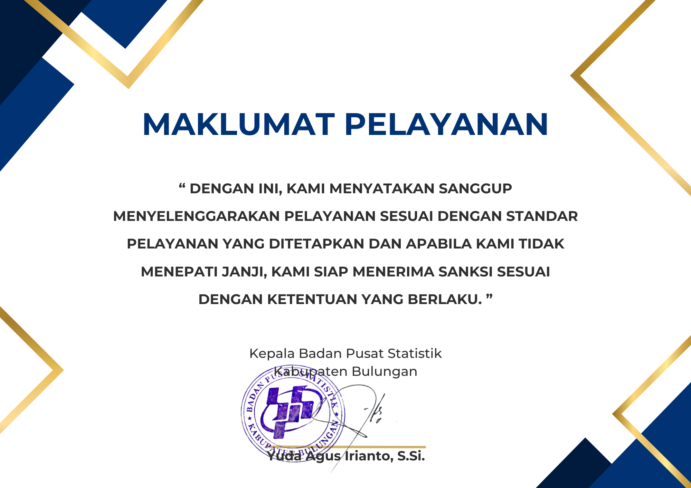

Selamat datang di SIMPELANTIK
Pelayanan Statistik Terpadu (PST) BPS Kabupaten Bulungan
Jam Layanan Offline:
Senin - Kamis : 08.00 - 15.30
WITA
Jumat : 08.00 - 16.00 WITA


LAYANAN KAMI
Website BPS Kabupaten Bulungan
Portal resmi BPS Kabupaten Bulungan yang menyediakan berbagai informasi statistik, publikasi, dan layanan data yang dapat diakses secara online. Website ini menjadi sumber utama informasi mengenai statistik di Kabupaten Bulungan.
Dapatkan Layanan IniLayanan Integrasi Statistik dan Angka (LINTANG)
Chatbot WhatsApp yang memudahkan akses informasi statistik dan angka penting dari BPS Kabupaten Bulungan. Layanan ini memungkinkan pengguna mendapatkan data statistik dengan cepat dan mudah melalui aplikasi WhatsApp.
Dapatkan Layanan IniPerpustakaan Offline
Perpustakaan fisik BPS Kabupaten Bulungan yang menyediakan berbagai koleksi buku, jurnal, dan publikasi statistik. Pengunjung dapat mengakses dan meminjam berbagai literatur terkait statistik di sini.
Dapatkan Layanan IniPerpustakaan Online
Layanan perpustakaan digital yang memungkinkan pengguna mengakses berbagai publikasi, e-book, dan jurnal statistik secara online. Layanan ini memudahkan pengguna mendapatkan literatur statistik tanpa harus datang ke perpustakaan fisik.
Dapatkan Layanan IniKonsultasi Statistik Offline
Layanan konsultasi tatap muka dengan ahli statistik BPS Kabupaten Bulungan. Pengguna dapat mengajukan pertanyaan dan mendapatkan bimbingan langsung mengenai berbagai isu dan analisis statistik.
Dapatkan Layanan IniKonsultasi Statistik Online
Layanan konsultasi statistik yang dilakukan secara online melalui silastik.bps.go.id, Live Chat website, atau chat WhatsApp. Layanan ini memudahkan pengguna mendapatkan bantuan ahli statistik tanpa harus datang ke kantor BPS Kabupaten Bulungan.
Dapatkan Layanan IniRekomendasi Kegiatan Statistik Offline
Layanan pengajuan rekomendasi kegiatan statistik secara langsung atau melalui surat ke kantor BPS setempat. Cocok bagi pengguna yang lebih nyaman dengan proses tatap muka atau memiliki kendala akses internet.
Dapatkan Layanan IniRekomendasi Kegiatan Statistik Online
Layanan pengajuan rekomendasi kegiatan statistik secara online melalui web Romantik. Memudahkan pengguna untuk mengunggah proposal dan dokumen pendukung serta memantau status permohonan secara real-time.
Dapatkan Layanan IniPenjualan Produk Statistik
Layanan penjualan data mikro dan peta wilayah kerja statistik (wilkerstat) yang disediakan oleh BPS. Pengguna dapat membeli data-data ini untuk keperluan penelitian, analisis, dan perencanaan.
Dapatkan Layanan IniPermintaan Data
Layanan untuk mengajukan permintaan data statistik tertentu yang dibutuhkan oleh pengguna. BPS Kabupaten Bulungan akan memproses dan menyediakan data sesuai dengan kebutuhan pengguna berdasarkan ketentuan yang berlaku.
Dapatkan Layanan IniLAYANAN PENGADUAN
SP4N LAPOR!
Layanan Aspirasi dan Pengaduan Online Rakyat, memberikan satu pintu pengaduan untuk semua jenis masalah pelayanan publik.
Pengaduan BPS Bulungan
Layanan untuk menyampaikan pengaduan terkait layanan BPS Kabupaten Bulungan. Pengguna dapat melaporkan keluhan atau masalah yang dihadapi melalui formulir ini.
Whistleblowing System BPS
Sistem untuk melaporkan dugaan pelanggaran hukum, peraturan, atau kode etik yang terjadi di lingkungan BPS. Laporan dapat dilakukan secara anonim.
MAKLUMAT PELAYANAN
STANDAR PELAYANAN
Standar Pelayanan PST BPS Kabupaten Bulungan ditetapkan untuk memastikan setiap layanan statistik diberikan dengan kualitas terbaik dan sesuai dengan kebutuhan pengguna.
HUBUNGI KAMI
Jika Anda memiliki pertanyaan atau memerlukan bantuan untuk mendapatkan layanan kami, Anda dapat menghubungi kami melalui kontak di bawah ini.
Alamat
Jl. Kol. H. Soetadji No. 85, Tanjung Selor Hilir
Email Kami
bps6502@bps.go.id